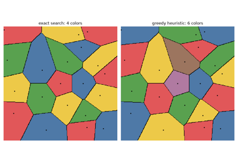
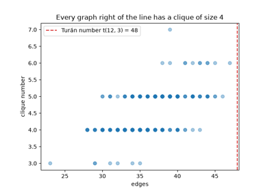
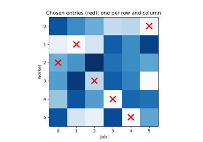
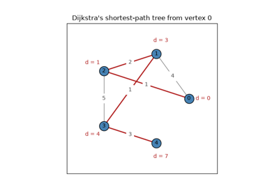
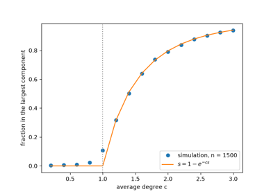
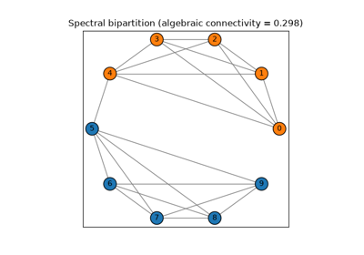

Breakthroughs in Graph Theory#
“This question is so banal, but seemed to me worthy of attention in that neither geometry, nor algebra, nor even the art of counting was sufficient to solve it.” – Leonhard Euler, letter to Giovanni Marinoni, 1736
Graph theory began as a recreational puzzle about a Prussian city’s
bridges; nearly three centuries later its algorithms route internet
traffic, plan delivery networks, and cluster social networks. This
chronology traces the ideas behind mathematicskit.graph_theory,
from Leonhard Euler’s original impossibility proof to the spectral
methods and the PageRank algorithm that read a graph’s structure
directly from a matrix.
1736 – Euler and the Seven Bridges of Königsberg#
Leonhard Euler’s 1736 paper settled a local puzzle in Königsberg (now Kaliningrad): could a walker cross each of the city’s seven bridges exactly once? Euler proved it impossible by reducing the city to what would now be called a graph, with land masses as vertices and bridges as edges. Such a walk requires that at most two land masses touch an odd number of bridges, and all four of Königsberg’s did. Carl Hierholzer proved in 1873 that the condition is also sufficient for a connected graph. Euler’s paper is universally credited as the founding paper of graph theory, even though it never draws anything resembling a modern graph diagram.
Connection: every algorithm in mathematicskit.graph_theory
operates on mathematicskit.graph_theory.core.base.Graph, the
same vertices-and-edges abstraction Euler introduced to solve this
problem.
References: L. Euler, “Solutio problematis ad geometriam situs pertinentis,” Commentarii Academiae Scientiarum Petropolitanae 8 (1741), 128-140 (presented to the St. Petersburg Academy in 1735; the volume is dated 1736 but was printed in 1741).
1847 – Kirchhoff’s Matrix-Tree Theorem#
Gustav Kirchhoff’s 1847 paper on electrical networks needed the number of independent current loops in a circuit, and along the way showed how to count its spanning trees. Form the Laplacian matrix \(L = D - A\), delete any one row and the matching column, and take the determinant: the result is the number of spanning trees. A combinatorial count that seems to require listing exponentially many subgraphs thus reduces to linear algebra. For the complete graph \(K_n\) the determinant is \(n^{n-2}\), Cayley’s formula. The same Laplacian later became the central object of spectral graph theory.
Implementation: mathematicskit.graph_theory.systems.enumeration.count_spanning_trees()
evaluates the reduced Laplacian’s determinant with
numpy.linalg.slogdet(). The tests reproduce Cayley’s formula and
the counts for cycles and complete bipartite graphs, and the example
checks a small graph against brute-force enumeration.
References: G. Kirchhoff, “Ueber die Auflösung der Gleichungen, auf welche man bei der Untersuchung der linearen Vertheilung galvanischer Ströme geführt wird,” Annalen der Physik und Chemie 72(12) (1847), 497-508.

1852-1976 – The Four Color Problem#
In 1852 Francis Guthrie, while coloring a map of England’s counties, conjectured that four colors always suffice to color any planar map so that no two adjacent regions share a color. Despite its simple statement, the conjecture resisted proof for a century and a quarter. Kenneth Appel and Wolfgang Haken’s 1976 proof reduced the problem to a large but finite set of configurations and checked each one by computer. It was the first major theorem whose proof no person could feasibly verify by hand, a landmark in how mathematics is done. Coloring an arbitrary graph (not necessarily planar) with as few colors as possible is NP-complete, and no efficient exact algorithm is known for large graphs.
Implementation: mathematicskit.graph_theory.systems.coloring.greedy_coloring()
implements the fast, but not always optimal, greedy heuristic.
backtracking_coloring()
implements exact exhaustive search. It is feasible only for small
graphs, which is the exponential cost that NP-completeness predicts.
References: K. Appel and W. Haken, “Every Planar Map is Four Colorable,” Illinois Journal of Mathematics 21(3) (1977), 429-490 (the published form of the proof announced in 1976).

The four color theorem: coloring a planar map
1857 – Hamilton’s Icosian Game#
In 1857 William Rowan Hamilton invented a puzzle, later sold as the “Icosian Game”: travel along the edges of a dodecahedron so as to visit each of its 20 vertices exactly once and return to the start. Thomas Kirkman had studied the same question for general polyhedra two years earlier. A cycle through every vertex of a graph is now called Hamiltonian. Unlike Euler’s bridge problem, which a simple degree count settles, deciding whether a Hamiltonian cycle exists is hard in general: Richard Karp showed in 1972 that it is NP-complete, and the travelling salesman problem is its weighted version.
Implementation: mathematicskit.graph_theory.systems.hamiltonian.hamiltonian_cycle()
searches by backtracking, and
dodecahedron_graph()
builds Hamilton’s game board. The tests solve the icosian game and
confirm that the Petersen graph has no Hamiltonian cycle.
References: N. L. Biggs, E. K. Lloyd, and R. J. Wilson, Graph Theory 1736-1936 (Oxford: Clarendon Press, 1976), Ch. 2.
1927-1956 – Menger, Ford, Fulkerson, and Max-Flow Min-Cut#
Karl Menger’s 1927 theorem on the number of vertex-disjoint paths between two vertices anticipated, in a purely combinatorial setting, the duality at the heart of Lester Ford Jr. and Delbert Fulkerson’s 1956 max-flow min-cut theorem. The maximum flow that can be pushed from a source to a sink through a network with edge capacities equals the minimum total capacity of any set of edges whose removal disconnects the source from the sink. Ford and Fulkerson’s augmenting-path algorithm remains the conceptual backbone of modern max-flow solvers. Yefim Dinitz (published as “Dinic”) gave it an efficient blocking-flow form in 1970, and Jack Edmonds and Richard Karp proved a polynomial time bound for a shortest-augmenting-path version in 1972.
Implementation: mathematicskit.graph_theory.systems.max_flow.max_flow_min_cut()
wraps scipy.sparse.csgraph.maximum_flow() (Dinitz’s algorithm by
default). It derives the corresponding minimum cut from the residual
graph of the resulting flow, which is the certificate the max-flow
min-cut theorem guarantees.
References: K. Menger, “Zur allgemeinen Kurventheorie,” Fundamenta Mathematicae 10 (1927), 96-115; L. R. Ford Jr. and D. R. Fulkerson, “Maximal Flow Through a Network,” Canadian Journal of Mathematics 8 (1956), 399-404.

1931-1973 – König, Hopcroft, Karp, and Bipartite Matching#
Dénes Kőnig proved in 1931 that in a bipartite graph the largest number of edges with no shared endpoint (a maximum matching) equals the smallest number of vertices that touch every edge (a minimum vertex cover). Jenő Egerváry extended the result to weighted graphs the same year. Matchings model assigning workers to jobs or students to schools. John Hopcroft and Richard Karp’s 1973 algorithm finds a maximum matching in \(O(E\sqrt V)\) time by augmenting along many shortest alternating paths at once, and it remains the standard method.
Implementation: mathematicskit.graph_theory.systems.matching.bipartite_matching()
calls scipy.sparse.csgraph.maximum_bipartite_matching() (the
Hopcroft-Karp algorithm) and then builds a minimum vertex cover by
König’s construction. The tests check on random bipartite graphs that
the cover covers every edge and has the same size as the matching.
References: D. Kőnig, “Gráfok és mátrixok,” Matematikai és Fizikai Lapok 38 (1931), 116-119; J. E. Hopcroft and R. M. Karp, “An \(n^{5/2}\) Algorithm for Maximum Matchings in Bipartite Graphs,” SIAM Journal on Computing 2(4) (1973), 225-231.
1941 – Turán’s Theorem#
How many edges can a graph on \(n\) vertices have without containing a complete subgraph \(K_{r+1}\)? Willem Mantel answered the triangle case in 1907: at most \(\lfloor n^2/4 \rfloor\). Pál Turán, working in a labour camp in 1941, solved the general case. The maximum is reached only by the Turán graph \(T(n, r)\), which splits the vertices into \(r\) nearly equal parts and joins every pair of vertices in different parts. Adding any single edge creates a \(K_{r+1}\). The theorem founded extremal graph theory, which asks how large a structure can be while avoiding a given pattern.
Implementation: mathematicskit.graph_theory.systems.extremal.turan_graph()
and turan_number()
build the extremal graph and its edge count, and
clique_number()
finds the largest clique by Bron-Kerbosch search. The tests confirm
that adding any edge to a Turán graph creates a larger clique.
References: P. Turán, “Egy gráfelméleti szélsőértékfeladatról,” Matematikai és Fizikai Lapok 48 (1941), 436-452; W. Mantel, “Problem 28,” Wiskundige Opgaven 10 (1907), 60-61.

Turán’s theorem: the densest clique-free graphs
1955 – Kuhn’s Hungarian Method#
The assignment problem asks how to assign \(n\) workers to \(n\) jobs, one each, at minimum total cost. Checking all \(n!\) assignments is hopeless even for modest \(n\). Harold Kuhn’s 1955 algorithm, which he named the Hungarian method in honour of the work of Dénes Kőnig and Jenő Egerváry on which it rests, solves the problem in polynomial time by adjusting row and column prices until a perfect matching appears among the zero-cost entries. James Munkres showed in 1957 that it runs in \(O(n^3)\) time. It was later found that Carl Gustav Jacob Jacobi had described an equivalent method in work published posthumously in 1890.
Implementation: mathematicskit.graph_theory.systems.assignment.solve_assignment()
wraps scipy.optimize.linear_sum_assignment(). The tests compare
it with brute force over all \(6!\) assignments, for both
minimization and maximization.
References: H. W. Kuhn, “The Hungarian Method for the Assignment Problem,” Naval Research Logistics Quarterly 2(1-2) (1955), 83-97; J. Munkres, “Algorithms for the Assignment and Transportation Problems,” Journal of the Society for Industrial and Applied Mathematics 5(1) (1957), 32-38.

Kuhn’s Hungarian method: the assignment problem
1956-1957 – Kruskal, Prim, and the Minimum Spanning Tree#
Joseph Kruskal’s 1956 algorithm builds a minimum spanning tree by adding edges in increasing order of weight, skipping any edge that would close a cycle. Robert Prim’s 1957 algorithm instead grows a single tree outward, always adding the cheapest edge that leaves the tree so far. Prim had rediscovered a method that Vojtěch Jarník published in Czech in 1930, which went largely unnoticed outside Central Europe for decades. Both algorithms are provably optimal and run in similar time, but their strategies differ – building a forest versus growing a single tree – and the difference is easy to see when they run side by side on the same graph.
Implementation: mathematicskit.graph_theory.systems.spanning_tree.kruskal_mst()
wraps scipy.sparse.csgraph.minimum_spanning_tree() (Kruskal-based).
prim_mst() keeps
Prim’s algorithm hand-rolled for this side-by-side comparison, not as a
competing primary API.
References: J. B. Kruskal, “On the Shortest Spanning Subtree of a Graph and the Traveling Salesman Problem,” Proceedings of the American Mathematical Society 7(1) (1956), 48-50; R. C. Prim, “Shortest Connection Networks and Some Generalizations,” Bell System Technical Journal 36(6) (1957), 1389-1401.
1959 – Dijkstra’s Shortest-Path Algorithm#
Edsger Dijkstra devised his shortest-path algorithm in 1956 while looking for a simple, useful problem to demonstrate a new computer: finding the shortest route between two Dutch cities. By his own later account, he designed it in about twenty minutes without pen or paper. Published in 1959, the algorithm greedily extends the set of vertices whose shortest distance is known, one vertex at a time. It remains the standard algorithm for single-source shortest paths whenever edge weights are non-negative.
Implementation: mathematicskit.graph_theory.systems.shortest_paths.dijkstra_shortest_paths()
wraps scipy.sparse.csgraph.dijkstra(). For graphs with negative
edge weights, where Dijkstra’s greedy assumption breaks down,
bellman_ford_shortest_paths()
wraps the Bellman-Ford algorithm (Lester Ford Jr., 1956; Richard
Bellman, 1958) instead.
References: E. W. Dijkstra, “A Note on Two Problems in Connexion with Graphs,” Numerische Mathematik 1 (1959), 269-271.

Dijkstra’s shortest-path algorithm (and when Bellman-Ford is needed)
1959-1960 – Erdős, Rényi, and Random Graphs#
Paul Erdős and Alfréd Rényi’s papers of 1959 and 1960, together with Edgar Gilbert’s 1959 paper, studied graphs whose edges are chosen at random. In \(G(n, p)\) each of the possible edges is present independently with probability \(p\). With average degree \(c = np\), the graphs change abruptly at \(c = 1\). Below it every component is tiny; above it a single giant component suddenly holds a fixed fraction \(s\) of all vertices, the positive root of \(s = 1 - e^{-cs}\). This phase transition made random graphs a subject of their own, and they became the baseline for studying real networks.
Implementation: mathematicskit.graph_theory.utils.generators.random_graph()
samples \(G(n, p)\), and
mathematicskit.graph_theory.systems.components.giant_component_fraction()
measures the largest component using
connected_components(),
which wraps scipy.sparse.csgraph.connected_components(). The
example compares simulations with the theoretical curve.
References: P. Erdős and A. Rényi, “On Random Graphs I,” Publicationes Mathematicae Debrecen 6 (1959), 290-297; P. Erdős and A. Rényi, “On the Evolution of Random Graphs,” Publications of the Mathematical Institute of the Hungarian Academy of Sciences 5 (1960), 17-61.

Erdős and Rényi: the birth of the giant component
1962 – Floyd, Warshall, and All-Pairs Shortest Paths#
Stephen Warshall’s 1962 theorem computed which vertices of a directed graph can reach which others, and Robert Floyd’s algorithm of the same year turned the idea into shortest paths between every pair of vertices. Bernard Roy had published the method in 1959. Allowing the vertices \(1, \dots, k\) in turn as intermediate stops, the distances are updated by
three nested loops that give all \(n^2\) distances in \(O(n^3)\) time. Negative edge weights are allowed, as long as there are no negative cycles.
Implementation: mathematicskit.graph_theory.systems.shortest_paths.floyd_warshall_shortest_paths()
wraps scipy.sparse.csgraph.floyd_warshall(). The tests and
example confirm that it agrees with running Dijkstra’s algorithm from
every vertex.
References: R. W. Floyd, “Algorithm 97: Shortest Path,” Communications of the ACM 5(6) (1962), 345; S. Warshall, “A Theorem on Boolean Matrices,” Journal of the ACM 9(1) (1962), 11-12.
1968 – Hart, Nilsson, Raphael, and A* Search#
Peter Hart, Nils Nilsson, and Bertram Raphael developed A* in 1968 to plan paths for Shakey, an early mobile robot. Dijkstra’s algorithm expands vertices in order of their distance from the start, exploring in every direction. A* adds an estimate \(h(v)\) of the remaining distance to the goal and expands vertices in order of \(g(v) + h(v)\). If the estimate never overstates the true distance, A* still finds a shortest path, and the better the estimate, the fewer vertices it examines. A* remains the standard path-finding method in robotics, games, and route planning.
Implementation: mathematicskit.graph_theory.systems.search.astar_shortest_path()
implements A* with a binary heap, and
grid_graph() builds
grid maps with obstacles. The tests confirm that A* with the Manhattan
heuristic matches Dijkstra’s distance while expanding fewer vertices.
References: P. E. Hart, N. J. Nilsson, and B. Raphael, “A Formal Basis for the Heuristic Determination of Minimum Cost Paths,” IEEE Transactions on Systems Science and Cybernetics 4(2) (1968), 100-107.
1973 – Fiedler and Spectral Graph Theory#
Miroslav Fiedler’s 1973 paper studied the eigenvalues of a graph’s Laplacian matrix, \(L = D - A\) (degree matrix minus adjacency matrix). Its second-smallest eigenvalue, now called the “algebraic connectivity” or Fiedler value, is zero exactly when the graph is disconnected, and otherwise measures how well connected the graph is. The sign pattern of the corresponding eigenvector splits the vertices into two well-separated communities, the simplest form of spectral clustering.
Implementation: mathematicskit.graph_theory.systems.spectral.spectral_analysis()
computes this Laplacian (with scipy.sparse.csgraph.laplacian()),
its full spectrum (with numpy.linalg.eigh()), and the
Fiedler-vector bipartition.
References: M. Fiedler, “Algebraic Connectivity of Graphs,” Czechoslovak Mathematical Journal 23(2) (1973), 298-305.

Fiedler’s spectral bipartition of a “barbell” graph
1998 – Brin, Page, and PageRank#
Sergey Brin and Larry Page’s 1998 paper ranked web pages by imagining a random surfer who follows a random link with probability \(d\) (typically 0.85) and otherwise jumps to a random page. A page’s rank is the long-run fraction of time the surfer spends there, the stationary distribution of this Markov chain. Pages linked from important pages become important themselves. The rank vector is the dominant eigenvector of the “Google matrix”, and power iteration finds it with an error that shrinks by the factor \(d\) per step. PageRank powered the early Google search engine and is now used well beyond the web.
Implementation: mathematicskit.graph_theory.systems.ranking.pagerank()
runs power iteration on the sparse link matrix and handles pages with no
out-links. The tests check the result against the dominant eigenvector
computed with numpy.linalg.eig().
References: S. Brin and L. Page, “The Anatomy of a Large-Scale Hypertextual Web Search Engine,” Computer Networks and ISDN Systems 30(1-7) (1998), 107-117.